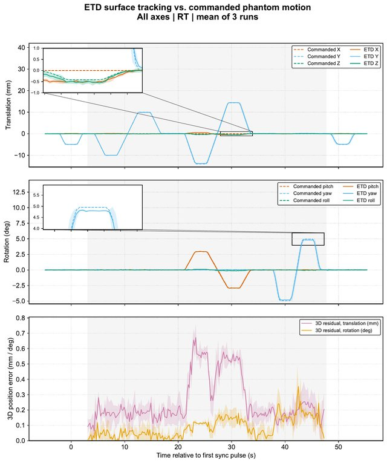
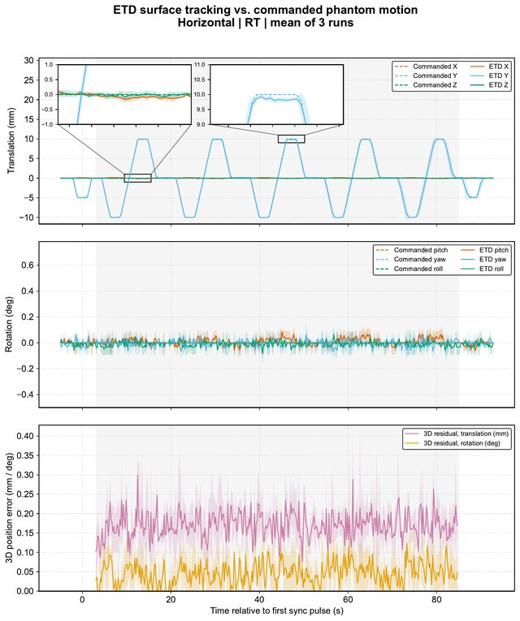
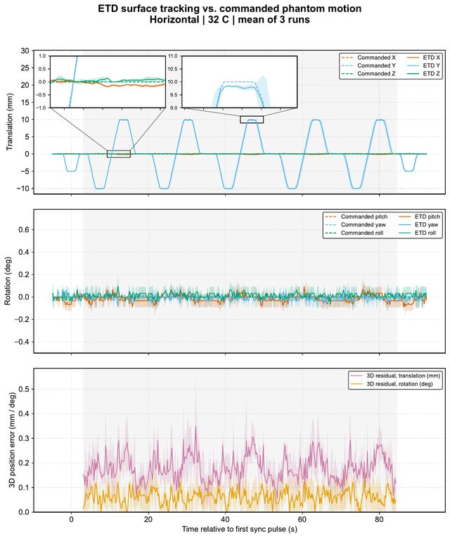
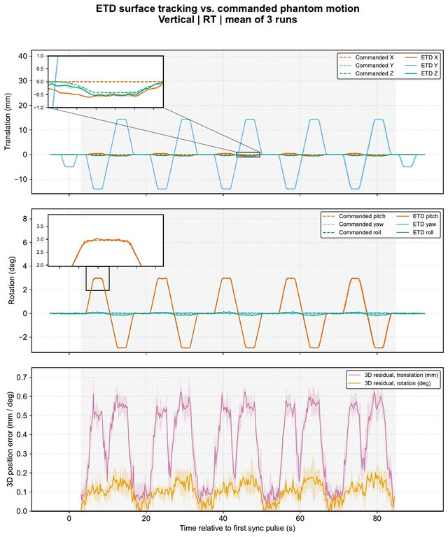
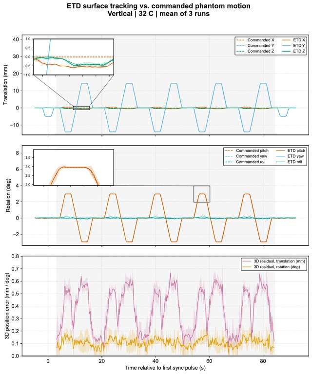
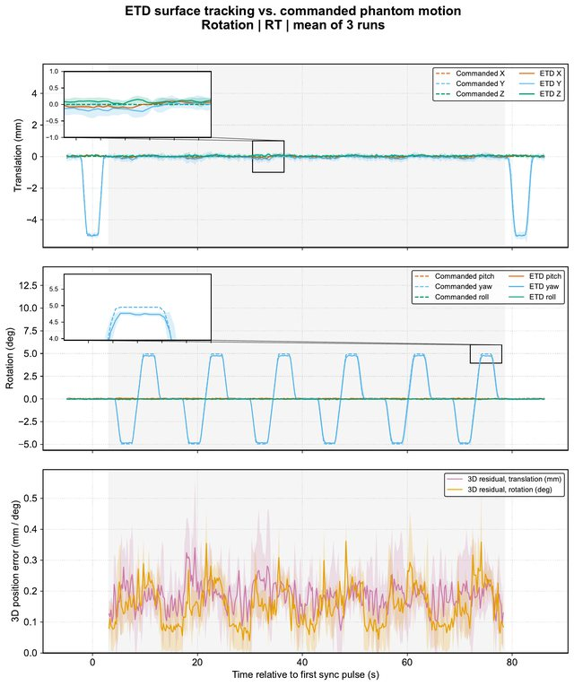
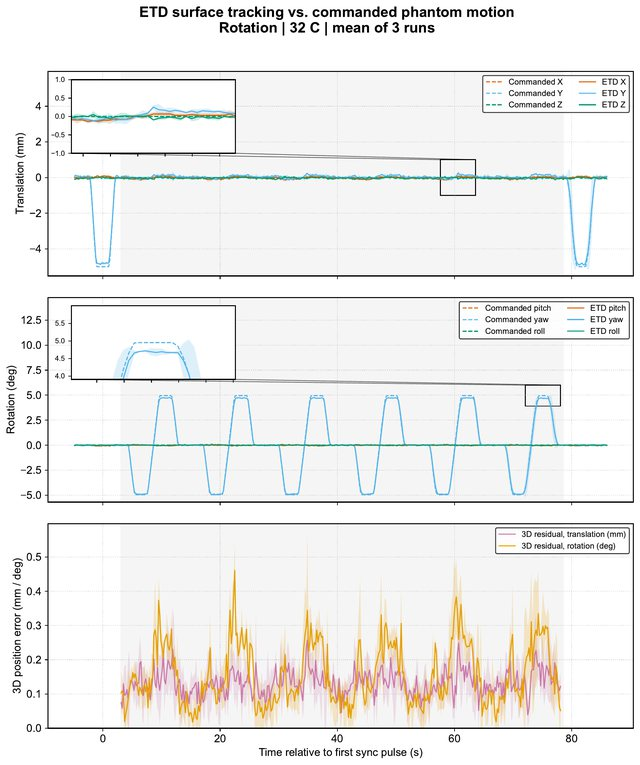

Analysis · surf-etds-analysis @ 2e9e1e8
Tracking accuracy of ExacTrac Dynamic Surface
Figures of the evaluation pipeline, rebuilt from surf-etds-data v1.0.0 (campaign 2026-03-10_L4, linac 4). Residual: ETD output minus commanded phantom pose after the kinematic transformation, evaluated within the measurement window between the sync pulses. Three runs per motion programme unless noted; pads at room temperature (RT) or 32 °C.
DoF: lateral (X), longitudinal (Y), vertical (Z) in mm; pitch about X, roll about Y, yaw about Z in degrees.
Isolated-axis campaigns, pooled

RMSE per degree of freedom
Sample-weighted over 9 runs of the horizontal, vertical and rotation campaigns (N = 6641), room temperature. Grey bar: SD over all runs (axis dependence); whisker: mean within-axis SD (reproducibility).
RMSE longitudinal 0.15 mm, lateral 0.22 mm, vertical 0.09 mm; pitch 0.05°, yaw 0.09°, roll 0.07°. Lateral shows the strongest axis dependence.
surf-etds-analysis @ 2e9e1e8 · paper_data/process_v2/figures/fig_combined_rmse_RT.pdf · PDF, 28 KB
Single-axis campaigns
Horizontal slide
Five cycles per run, three runs, room temperature; whisker: SD between runs.
Largest RMSE along the direction of motion (longitudinal 0.13 mm); rotations ≤ 0.04°.
surf-etds-analysis @ 2e9e1e8 · paper_data/process_v2/figures/fig_horizontal_rmse_RT.pdf · PDF, 28 KB
Vertical slide
Five cycles per run, three runs, room temperature; whisker: SD between runs.
Lateral 0.37 mm, the largest translational RMSE of all campaigns (cross-axis); vertical 0.08 mm.
surf-etds-analysis @ 2e9e1e8 · paper_data/process_v2/figures/fig_vertical_rmse_RT.pdf · PDF, 27 KB
Rotation
Five cycles per run, three runs, room temperature; whisker: SD between runs.
Yaw 0.15° and longitudinal 0.16 mm; all other DoF lower.
surf-etds-analysis @ 2e9e1e8 · paper_data/process_v2/figures/fig_rotation_rmse_RT.pdf · PDF, 27 KB
All-axes sequence
All-axes sequence
Horizontal and vertical ±10 mm and rotation ±5°, sequentially within each run; three runs, room temperature.
RMSE longitudinal 0.16 mm, lateral 0.23 mm, vertical 0.10 mm; pitch 0.05°, yaw 0.09°, roll 0.06°; consistent with the pooled isolated-axis result.
surf-etds-analysis @ 2e9e1e8 · paper_data/process_v2/figures/fig_allaxes_rmse_RT.pdf · PDF, 29 KB
Pad temperature
Thermal surface signature: room temperature vs 32 °C
RMSE per DoF for the three isolated-axis campaigns, pads at room temperature (teal) and 32 °C (orange); whiskers: SD between runs (n = 3).
|ΔRMSE| ≤ 0.06 mm (longitudinal, rotation campaign) and ≤ 0.03° (pitch, rotation campaign), without consistent sign; the lateral RMSE of the vertical campaign is unchanged (0.37 mm vs 0.37 mm).
surf-etds-analysis @ 2e9e1e8 · paper_data/process_v2/figures/fig_temperature_comparison.pdf · PDF, 28 KB
Time series
Horizontal slide, room temperature
Mean of three runs. Top and middle: commanded (dashed) and ETD-reported (solid) translations and rotations, band ±1 SD. Bottom: magnitude of the 3D residual, translation (mm) and rotation (°). Grey: measurement window between the sync pulses (−5 mm steps). Insets: cross-axis coupling and a 10 mm plateau.
ETD reads slightly below the 10 mm plateau (right inset); the translational residual lies mostly between 0.1 and 0.25 mm, the rotational residual below 0.1°.
surf-etds-analysis @ 2e9e1e8 · paper_data/process_v2/figures/with_zoom/Horizontal_RT_residual3d_zoom.pdf · PDF, 154 KB
All motion programmes
Variants per programme: with or without insets; bottom panel either the 3D residual or the registration RMS reported by ETD (surface match and thermal camera).
All-axes sequence±10 mm H/V, ±5° R, sequential · 4 PDFs

Room temperature · mean of 3 runs
3D residual: insets · plain · ETD registration RMS: insets · plain
Horizontal slide5 cycles per run · 8 PDFs

Room temperature · mean of 3 runs
3D residual: insets · plain · ETD registration RMS: insets · plain
32 °C · mean of 3 runs
3D residual: insets · plain · ETD registration RMS: insets · plain
Vertical slide5 cycles per run · 8 PDFs

Room temperature · mean of 3 runs
3D residual: insets · plain · ETD registration RMS: insets · plain
32 °C · mean of 3 runs
3D residual: insets · plain · ETD registration RMS: insets · plain
Rotation5 cycles per run · 8 PDFs

Room temperature · mean of 3 runs
3D residual: insets · plain · ETD registration RMS: insets · plain
32 °C · mean of 3 runs
3D residual: insets · plain · ETD registration RMS: insets · plain
Reproduction
Two independent builds from commit 2e9e1e8 gave byte-identical PDFs (Python ≥ 3.11).
git clone --recurse-submodules https://github.com/AG-Kollotzek/surf-etds-analysis.git
cd surf-etds-analysis && git checkout 2e9e1e8 && git submodule update
python -m pip install -r requirements.txt
SOURCE_DATE_EPOCH=$(git log -1 --format=%ct) python paper_pipeline.py